7.5: Multiple Feeds, Sidestreams, and Open Steam
기본 McCabe–Thiele에서는 operating line이 2개임을 배워왔다. 예를 들면 다음과 같다.
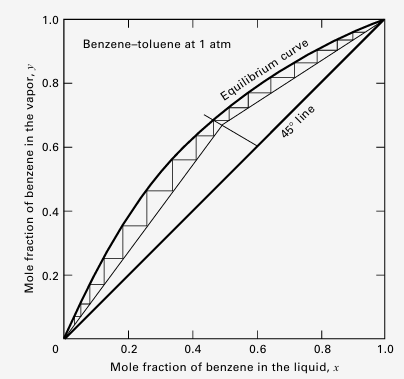
기본 distillation column은 보통 이렇게 생겼다.
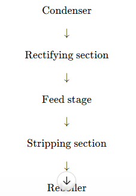
피드가 하나만 있으면 컬럼 내부 유량은 R과 S 두 영역으로만 나뉜다. 위쪽 rectifying section에서는 내부 액체 유량과 증기 유량이이 L,V, 아래쪽에서는 피드가 들어온 영향으로 Lˉ,Vˉ 로 나뉜다. 이로 인해 조작선도 2개가 된다.
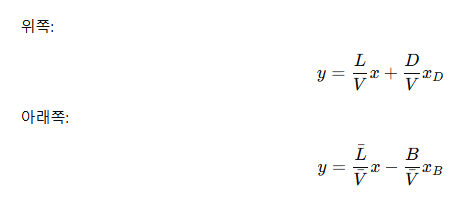
이때 중요한 것! operating line의 기울기 = 그 구간의 내부 액체 유량 / 내부 증기 유량이라는 것이다.
이제부터는 feed가 2개이거나, 중간에 side stream이 빠져나간다거나, reboiler 대신 open steam을 넣어서 내부 유량이 변동되는 경우를 살펴볼 것이다. 이때는 조작선이 더 많아진다.
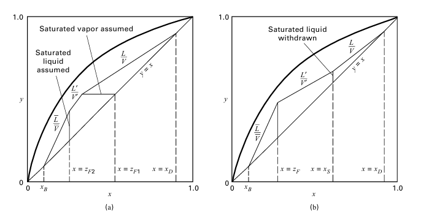
예를 들면 중간에서 liquid side stream이 빠져나가면, 그 아래로 내려가는 액체 유량이 줄어든다. 다음을 생각해보자.
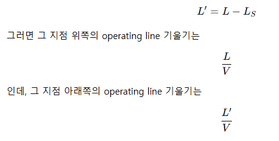
즉, 같은 rectifying section 안에서도 side stream 위아래가 다른 operating line을 갖게된다. 따라서 외부 stream이 들어오거나 나가는 지점을 기준으로 column을 여러 구간으로 자르고, 각 구간마다 물질수지를 새로 세워 operating line을 만들어야 한다.
Multiple feeds: feed가 여러 개 들어오는 경우
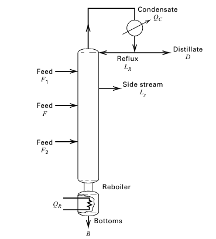
위 상황을 생각해보자. feed가 여러 개 있고, sidestream도 있을 수 있는 구조이다. 이때, 들어오는 구간을 나누고 각 구간마다 다른 조작선을 그려야 한다. 예를 들어 feed가 위쪽에 하나, 아래쪽에 하나 있다고해보자.
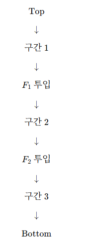
그러면 operating line도 구간 1, 구간 2, 구간 3에 대해 각각 생겨야 한다. 왜냐하면 feed가 들어오면 내부 흐름이 바뀌기 때문이다.
saturated liquid feed가 들어오면 그 feed는 아래로 내려가는 liquid에 더해진다.
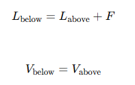
그래서 feed 아래쪽 operating line의 기울기 L/V가 커진다. 쉽게 말하면 액체 feed가 들어오면 아래쪽으로 내려가는 액체가 많아진다. 그래서 L/V가 커지고 operating line이 더 가팔라진다. 반대로 feed가 vapor이면 그 feed는 위로 올라가는 vapor에 더해지고
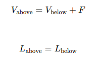
그래서 L/V가 작아지고 operating line이 완만해진다.
그럼 문제는 L이 들어오면 가팔라지고 V가 들어오면 완만해지는 거는 알겠는데 혼합이면 어떻게되나?
feed가 liquid + vapor 혼합이면, q를 써서 나눈다.
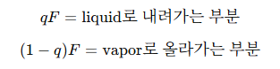 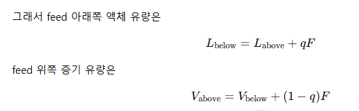
즉, feed가 여러 개 있으면 feed 하나하나가 내부 L,V를 바꾸고, 그 결과 operating line이 계속 바뀐다.
Sidestream: column 중간에서 product를 빼는 경우
distillate는 top에서 빠져나가고, bottoms는 bottom에서 빠져나가는데, sidestream은 그 중간 어딘가에서 빠져나간다. 물질수지를 만족하는 범위에서 sidestream 유량 LS와 조성 xS를 지정할 수 있다.
liquid sidestream이 빠지면 그 아래 operating line의 기울기가 작아진다.
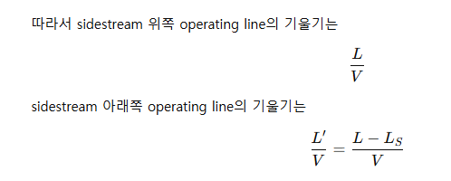
다음 예제를 통해 한번 감을 잡아보자. Example 7.5는 liquid sidestream이 rectifying section에서 빠지는 경우를 다룬다.
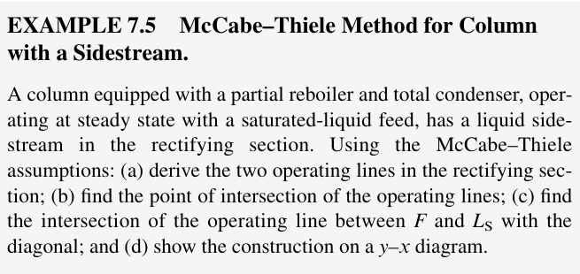
컬럼이 파셜리보일러와 토탈콘덴서로 구성되어있다. 피드는 포화액체이다. 이때 R영역에서 리퀴드 사이드스트림을 가진다. (멀티플피드가 아니므로 빠져나가는 것이다)
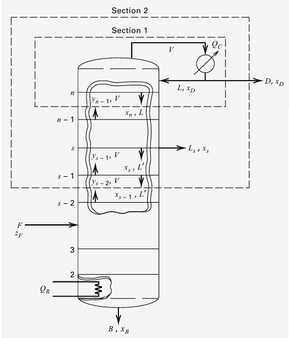
a: 두 조작선을 유도하라.
일단 사이드스트림보다 위쪽을 보도록 하자. 여기는 그냥 일반 조작선과 같다.
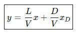
이때 사이드 스트림 아래쪽과 피드라인 사이를 보면 이미 L이 좀 빠져나갔다. 따라서 다음과 같다,
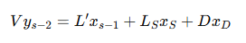 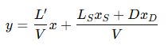
이게 sidestream 아래쪽, feed 위쪽 operating line 이다. 이때 다음과 같다.
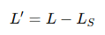
이때 두 선이 만나는 위치는
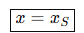
이말은 sidestream 조성 xS를 정해놓으면, 실제로 column 안에서 그 조성이 나오는 tray가 있어야 한다. 그건 column 내부에서 액체 조성이 그 값을 가지는 트레이에서 뺸다는 것이다.
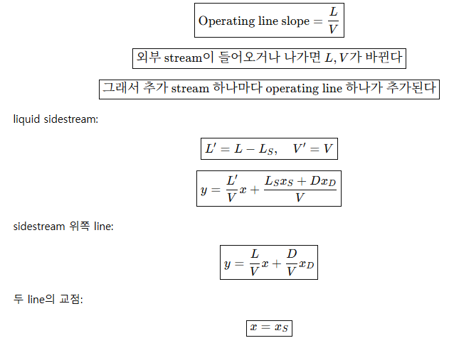